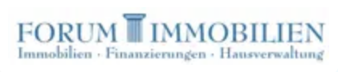

Forum Immobilien: Logo als Vektordatei (Nachbau)
Nachgebaut aus dem ImmoScout24-Profil, Stand 2026-11-03. Schrift: Libre Caslon Text, als Pfade. Farbe vorläufig, bis die Originaldatei vorliegt.
Original (Ausschnitt aus Screenshot)

Farbig auf Weiß
Ohne Unterzeile (Kopfzeile der Website, Mobil)
Weiß auf Marineblau der alten Website (#272e61)
Einfarbig (Stempel, Fax, Druck)
Favicon 64, 32, 16 Pixel

Klein (Breite 180 Pixel)